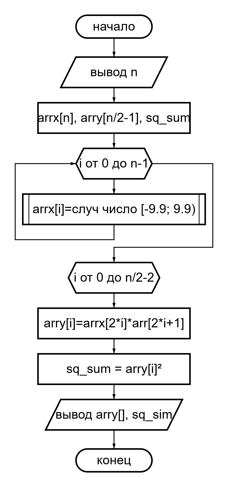

Вариант 9
В одномерном массиве, состоящем из n вещественных элементов, вычислить: - максимальный по модулю элемент массива; - преобразовать массив таким образом, чтобы элементы, равные нулю, располагались после всех остальных.
Элементы вещественного одномерного динамического массива arr размером
сгенерируем датчиком псевдослучайных чисел в диапазоне [-10, 10].
| Аргументы | Резултаты |
|---|---|
| n | arr[], abs_max |
enter n: 12
arr:
3.17, -2.88, -9.79, -9.47, 0.00, 0.00, 0.00, 0.00, 0.00, 0.00, 0.00, 0.00
abs max:
-9.79
#include <stdio.h>
#include <math.h>
#include <time.h>
typedef enum {CHAR, INT, FLOAT, DOUBLE} Type;
#define ull unsigned long long
#ifndef NULL
#define NULL ((void *)0)
#endif
#ifndef isdigit
#define isdigit(c) ((c) >= '0' && (c) <= '9')
#endif
#ifndef isspace
#define isspace(c) (((c)>9 && (c)<=13) || (c)==32)
#endif
#define floor(n, accur) ((double)(int)((n)*pow(10, (accur)))/pow(10, accur))
#define frand(low, high) ((low)+(double)rand()/RAND_MAX*((high)-(low)))
#define init_rf_arr(arr, size, accur, low, high) \
do { \
int i; \
for (i = 0; i < (size); ++i) \
arr[i] = rand()%2 ? (floor(frand((low), (high)), accur)) : 0; \
} while (0)
#define print_farr(arr, size, accur) \
do { \
int i; \
printf(#arr ":\n"); \
for (i = 0; i < (size); ++i) \
printf((i == (size)-1) ? ("% ." #accur "lf\n") \
: ("% ." #accur "lf, "), \
arr[i]); \
} while (0)
#define swap(T, a, b) \
do { \
T temp = (a); \
(a) = (b); \
(b) = temp; \
} while (0)
#define mv_zero_to_end(T, arr, arr_size) \
do { \
int i, j; \
for (j = 1; j < (arr_size); ++j) \
for (i = 0; i < (arr_size)-j; ++i) \
if ((arr)[i] == 0) \
swap(T, (arr)[i], (arr)[i + 1]); \
} while (0)
#ifdef _INC_STDLIB
#define new(T, size) (T *)malloc(sizeof(T)*(ull)(size)) /*syntax sugar*/
#else
#define NEXT_TYPE long long
#define RAND_TYPE short /*RAND_TYPE <= NEXT_TYPE for more "random" results */
#define NEXT_SIZE sizeof(NEXT_TYPE)
#define RAND_MAX_SIZE sizeof(RAND_TYPE)
#define RAND_MAX ((1ull<<(RAND_MAX_SIZE)*8)-1)
#define HALF_SHIFT ((NEXT_SIZE*8-RAND_MAX_SIZE*8)/2) /*narrowing the range of "NEXT" to "RANDOM"*/
static unsigned NEXT_TYPE next = 1;
void srand(unsigned RAND_TYPE seed) {
next = seed;
}
void srand(unsigned RAND_TYPE seed);
#define srand(init) srand((unsigned RAND_TYPE)(init))
unsigned RAND_TYPE rand(void);
void *alloc(ull n);
void free(void *ptr);
#define new(T, size) (T *)alloc(sizeof(T)*(ull)(size))
#endif
#define ACCUR 2
void *find_max_abs(Type type, void *arr, int arr_size);
int sget_int(char *start_msg, char *repeat_msg);
int main(void) {
int arr_size; // arr_size <=> n
srand((unsigned)time(NULL)); // rand func init
double *arr = new (double, arr_size = sget_int("enter n: ", "try again")); // mem alloc
init_rf_arr(arr, arr_size, ACCUR, -9.9, 9.9); // arr init random float
mv_zero_to_end(double, arr, arr_size); // move zero to end
print_farr(arr, arr_size, 2 /*2<=>ACCUR*/);
printf("abs max:\n% .2lf\n", *(double *)find_max_abs(DOUBLE, arr, arr_size)); // primt abs max
free(arr); // free mem
return 0;
}
#define abs(a) ((a) < 0 ? -(a) : (a))
#define macro(T, arrptr, maxptr) \
do { \
int i; \
for (maxptr = arrptr, i = 1; i < arr_size; ++i) \
if (abs(*((T *)arrptr + i)) > abs(*(T *)maxptr)) \
maxptr = (T *)arrptr + i; \
} while (0)
void *find_max_abs(Type type, void *arr, int arr_size) {
void *max;
switch (type) {
case CHAR:
macro(char, arr, max);
break;
case INT:
macro(int, arr, max);
break;
case FLOAT:
macro(float, arr, max);
break;
case DOUBLE:
macro(double, arr, max);
break;
}
return max;
}
#undef macro
int get_int(int *res) {
int c, isdig, start, sign;
sign = 0;
c=getchar();
if (c=='+'||c=='-') {
sign=c=='-'?-1:1;
c=getchar();
}
for (*res=0, isdig=start=1; c!='\n'; c=getchar()) {
if (isdig && (isdig=isdigit(c)))
*res=*res*10+c-'0';
start=0;
}
*res *= *res ? (sign?sign:1) : 1;
return !(sign==-1 && !*res) && isdig && !start;
}
int sget_int(char *start_msg, char *repeat_msg) {
int res;
printf("%s", start_msg);
while (!get_int(&res))
printf("%s", repeat_msg);
return res;
}
#ifndef _INC_STDLIB
unsigned RAND_TYPE rand(void) {
next = next * 1103515245 + 12345;
return (unsigned RAND_TYPE)(next<<HALF_SHIFT>>HALF_SHIFT>>HALF_SHIFT)%(RAND_MAX+1);
}
#define ALLOCSIZE 1000
static char allocbuff[ALLOCSIZE];
static char *allocp = allocbuff;
void *alloc(ull n) {
return (allocp + n <= allocbuff + ALLOCSIZE) ? (allocp+=n)-n : NULL;
}
void free(void *ptr) {
if ((char *)ptr >= allocbuff && (char *)ptr < allocbuff + ALLOCSIZE)
allocp = (char*)ptr;
else
printf("free: out of allocbuff");
}
#endifЭлементы вещественного одномерного динамического массива х размером n > 20 сгенерированы датчиком псевдослучайных чисел в диапазоне [-10, 10]. Сформировать массив y по формуле и выполнить указанные вычисления. Формулу записать с помощью математических символов в привычном виде. Вывести на экран исходный массив и результаты решения задачи. Все числа округлять до сотых. Анализ результатов выполнить с использованием известных математических пакетов. n = 2k, y[0] = x[0]х[1], у[1] = х[2]х[3], ..., y[k−1] = x[n−2]x[n−1]. Вычислить сумму квадратов элементов массива у.
Прелбразуем фориулу n = 2k, y[0] = x[0]х[1], у[1] = х[2]х[3], ..., y[k−1] = x[n−2]x[n−1]. с учетом n = 2k и прибавим 1 ко всем индесам получим y[k] = x[2k]x[2k+1]
| Аргументы | Резултаты |
|---|---|
| n - длина arrx[] | arrx[] |
| - | arry[] |
| - | sq_sum - сумма квадратов элем arry[] |
enter num: 12
arrx:
-9.87, 1.25, -6.07, 6.11, 1.68, -0.39, -2.96, 7.84, 6.39, 4.88, -6.45, 7.10
arry:
-12.34, -37.09, -0.66, -23.21, 31.18
sq summ: 3039.069648
#include <stdio.h>
#include <math.h>
#include <stdlib.h>
#ifndef isdigit
#define isdigit(c) ((c) >= '0' && (c) <= '9')
#endif
#ifndef isspace
#define isspace(c) (((c)>9 && (c)<=13) || (c)==32)
#endif
#define floor(n, accur) ((double)(int)((n)*pow(10, (accur)))/pow(10, accur))
#define frand(low, high) ((low)+(double)rand()/RAND_MAX*((high)-(low)))
#define init_rfarr(arr, size, accur, low, high) \
do { \
int i; \
for (i = 0; i < (size); ++i) \
arr[i] = floor(frand((low), (high)), accur); \
} while (0)
#define print_farr(arr, size, accur) \
do { \
int i; \
printf(#arr ":\n"); \
for (i = 0; i < (size); ++i) \
printf(i == (size)-1 ? "% ." #accur "lf\n" : "% ." #accur "lf, ", \
arr[i]); \
} while (0)
#define ull unsigned long long
#define new(T, size) ((T *)malloc(sizeof(T)*(ull)(size)))
#define ACCUR 2
int sget_int(char *start_msg, char *repeat_msg);
int get_int(int *res);
int main(void) {
int k, arrx_size;
double *arrx, *arry, sq_sum;
arrx = new (double, arrx_size = sget_int("enter num: ", "try again: ")); // mem alloc for arrx
arry = new (double, arrx_size/2-1); // mem alloc for arry
init_rfarr(arrx, arrx_size, ACCUR, -9.9, 9.9); // init arrx
for (sq_sum=k=0; k<arrx_size/2-1; ++k) { // init arrx
arry[k] = arrx[2*k]*arrx[2*k+1];
sq_sum+=arry[k]*arry[k];
}
print_farr(arrx, arrx_size, 2);
print_farr(arry, arrx_size/2-1, 2);
printf("sq summ: %lf\n", sq_sum);
free(arry);
free(arrx);
return 0;
}
int get_int(int *res) {
int c, isdig, start, sign;
sign = 0;
c=getchar();
if (c=='+'||c=='-') {
sign=c=='-'?-1:1;
c=getchar();
}
for (*res=0, isdig=start=1; c!='\n'; c=getchar()) {
if (isdig && (isdig=isdigit(c)))
*res=*res*10+c-'0';
start=0;
}
*res *= *res ? (sign?sign:1) : 1;
return !(sign==-1 && !*res) && isdig && !start;
}
int sget_int(char *start_msg, char *repeat_msg) {
int res;
printf("%s", start_msg);
while (!get_int(&res))
printf("%s", repeat_msg);
return res;
}Что такое указатель?
Указатель - это переменная, содержащая адрес переменной
Каков общий вид объявления указателя? Приведите
пример.
Объявление указателя ip
int *ip;
мнемонично - оно гласит: “выражение *ip имеет тип int”. Синтаксис объявления переменной “подстраивается” под синтаксис выражений, в которых эта переменная может встретиться. Указанный принцип применим и в объявлениях функций. Например, запись
double dp, atof (char );
означает, что выражения *dp и atof(s) имеют тип double, а аргумент функции atof есть указатель на char;
[const] тип [(] [*[const]] имя [)([арг1, арг2, ...])] [, [*] имя2...] = знач(адресс);
^ ^^^^^^^^^^^^^^^^^^^^ (указ. на функцию)
^^^^^ (константный)
^^^^^ (константное знач)Как описать несколько указателей на данные одного и того же типа?
Каковы особенности инициализации
указателей?
указателю разрешено указывать только на объекты определенного типа.
(Существует одно исключение: “указатель на void” может указывать на
объекты любого типа, но к такому указателю нельзя применять оператор
косвенного доступа
Константа нуль - единственное исключение из этого правила: ее можно присвоить указателю, и указатель можно сравнить с нулевой константой. Чтобы показать, что нуль - это специальное значение для указателя, вместо цифры нуль, как правило, записывают NULL - константу, эта константа определена в <stddef.h> или <string.h>.